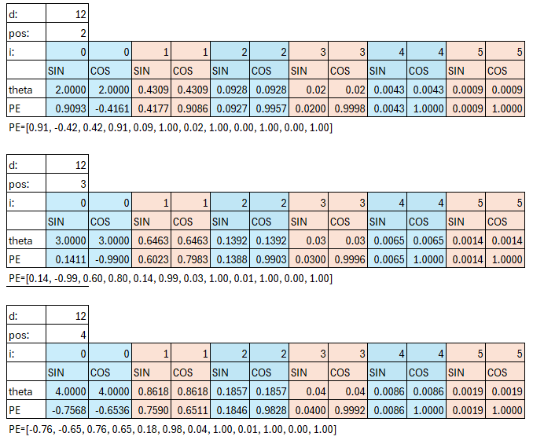
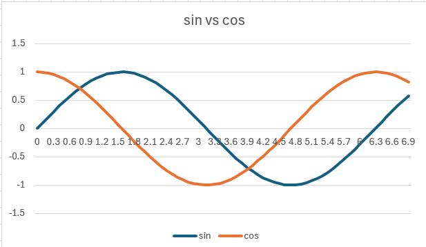

Introduction
In Natural Language processing (NLP), transformers model relationship between words to understand context.
> Transformers are a neural network architecture that uses attention to understand how words relate to each other in a sentence.
Attention scores determine how much each token contributes to another:
To compute these scores, the model creates
- Q - queries (what each word is looking for),
- K - keys (what each word offers),
- V - values (the information of each word)
Queries @ Keys -> Attention Weights
Attention Weights used to weight Values
Why Positional Embedding is important along with Word Embedding?
Without positional embedding, a transformer treats a sentence like a bag of tokens - ignoring word order.
Without positional information, the model cant tell:
"dog bites man"
from
"man bites dog"
Since the order of words is crucial for meaning, position embeddings are added to the token embedding to give the model information about both the word identity and its position in the sequence.
Whats wrong with Fixed Position Embedding?
Fixed or learned positional embeddings assign a unique vector per position. This works well then the input sequences are less than the block size used during training. But it cannot handle longer sequences. The model doesn't know the relative distance between token but on the absolute positions.
Types of Positional Embedding
Fixed Sinusoidal
The position embeddings are fixed like [Vaswani 2023]. They are added to the input embeddings at the bottom of the encoder or decoder stack. The positional embedding has the same dimension as the embedding and are summed.
$ PE_{(pos, 2i)} = sin(pos/10000^{2i/d})$
$ PE_{(pos, 2i+1)} = cos(pos/10000^{2i/d})$
where pos = position, i = dimension, the $\theta$ is in radians.
Note:
$sin(0) = 0 | cos(0) =1$
$sin(\pi/2) = sin(1.57) = 1| cos(\pi/2) = 0$
$sin(\pi) = sin(3.14) = 0| cos(\pi) = -1$
$sin(2\pi) = sin(6.28) = 0| cost(2\pi) = $


Learned Absolute
During training, position_embedding is learned just like other parameters.
Positional embeddings are fixed per position, not per sentence. Position 0 always has the same vector, position 1 always has the same vector, etc.
tok_emb = nn.Embedding(vocab_size, embed_size)
## for each token in the batch(sentence) & block, collect the token embedding from tok_emb
token_embedding = tok_emb(token) # (batch_size, block_size, embed_size)
position_embedding = nn.Parameter(torch.zeros(1, block_size, embed_size))
x_input = token_embeddings + position_embeddings